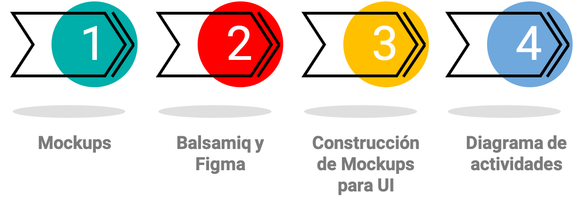
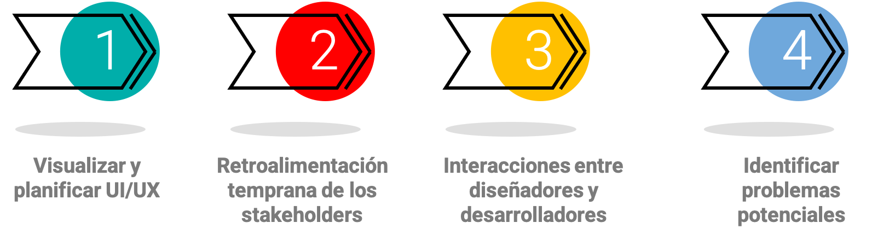
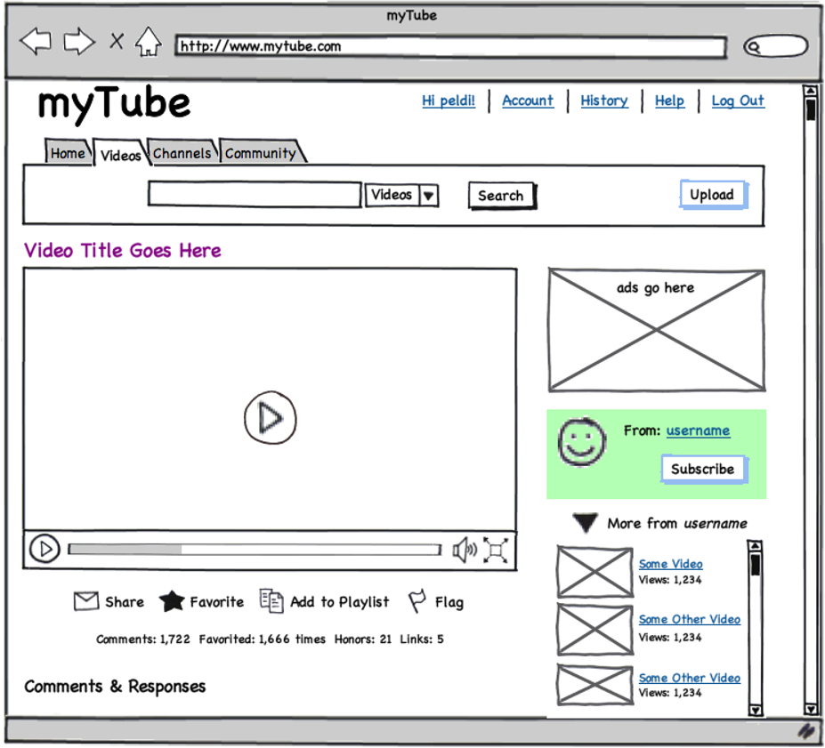
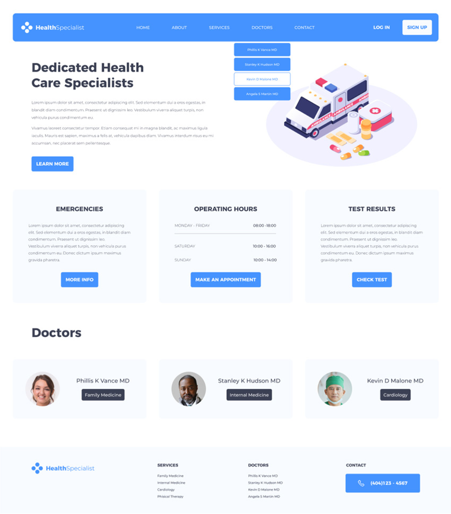
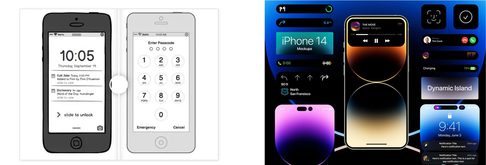
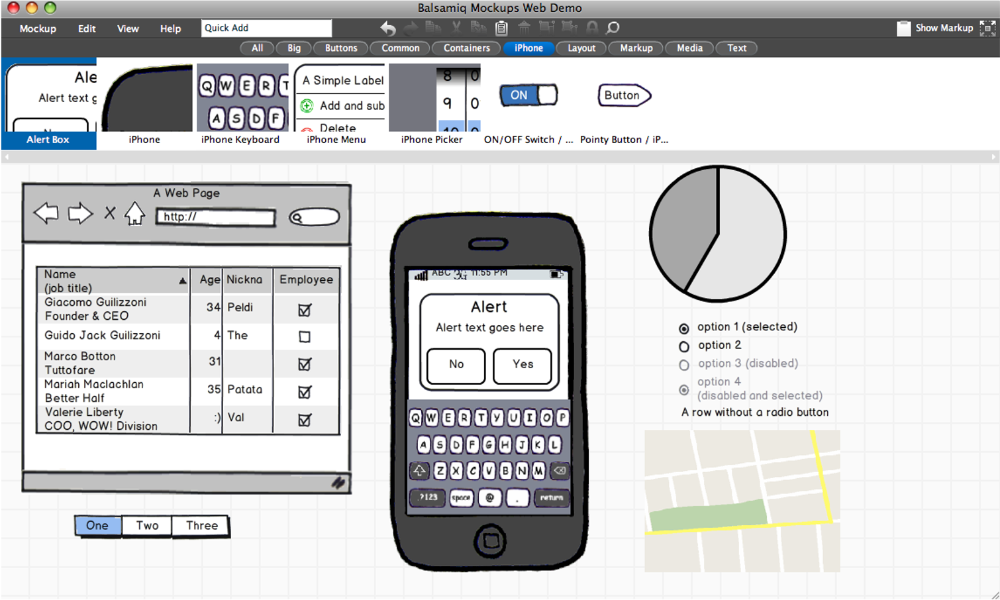

Unidad 8: Mockup’s y UI’s#
Contenido de la unidad#
¿Qué son los mockups?#
Es la representación visual de un Prototipo del proyecto que se va a realizar.
Una serie de imágenes que nos mostrarán el resultado que tendrá la maqueta web.
¿Qué son los UI’s?#
Un mockup es una interfaz de usuario.
Es la representación visual de la interfaz de usuario.
Es la parte del diseño que se encarga de la interacción del usuario con el sistema.
El diseño de la interfaz de usuario debe garantizar que la interacción entre el ser humano y la máquina, se realice de manera satisfactoria.
Utilidad de los mockups y UI’s en el proceso de software#
Ayudan a visualizar y planificar la interfaz de usuario (UI) y la experiencia de usuario (UX) de la aplicación o sitio web antes de comenzar a programar. Esto permite a los diseñadores y desarrolladores tener una comprensión clara de cómo se verá y funcionará la aplicación antes de invertir tiempo y recursos en la programación.
Permiten obtener retroalimentación temprana de los usuarios, clientes y stakeholders sobre la funcionalidad y el diseño de la aplicación. Los mockups son más fáciles de crear y modificar que el código real, lo que significa que los diseñadores pueden experimentar con diferentes opciones y recibir comentarios rápidos sobre lo que funciona y lo que no.
Facilitan la comunicación entre los diseñadores y desarrolladores, ya que los mockups proporcionan una base visual para que los equipos discutan los detalles de la UI y la UX. Esto puede reducir el tiempo que se tarda en completar una tarea y disminuir la posibilidad de malentendidos o errores en la implementación.
Pueden ayudar a identificar problemas potenciales en la funcionalidad o el diseño de la aplicación antes de la implementación. Si se descubre un problema en un mockup, es más fácil y económico corregirlo en esta etapa que después de que se ha escrito el código.
¿Cómo se ve un Mockup?#
Este tipo de representaciones visuales pueden ser muy variadas, desde un simple boceto en papel hasta un prototipo interactivo.
 Herramientas para crear Mockups#
Proceso de creación de un Mockup#
Identificar los elementos que deben incluirse en esta representación visual.
Implementar el mockup.
Verificar que el mockup cumpla con los requerimientos y esté alineado a los casos de uso.
Veamos como funciona Balsamiq#
🌐 Enlaces extra#
Recursos educativos de mockups
Aprende a utilizar balsamiq Mockups paso a paso con ejemplos - YouTube
Minicurso de Balsamiq Mockups (1) - Los wireframes y la interfaz - YouTube
Minicurso de Balsamiq Mockups (2) - La libreria de elementos - YouTube
Minicurso de Balsamiq Mockups (3) - Assets y simbolos - YouTube
Minicurso de Balsamiq Mockups (4, final) - Presentar el proyecto - YouTube